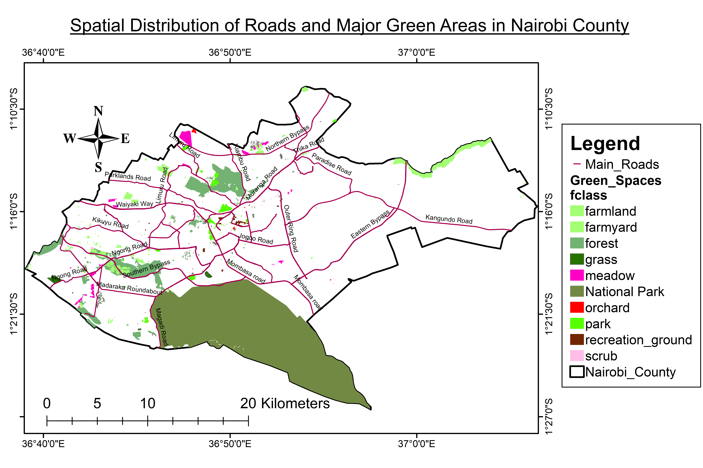
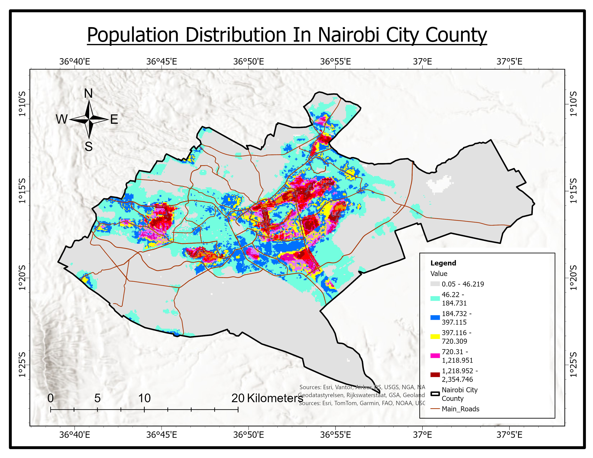
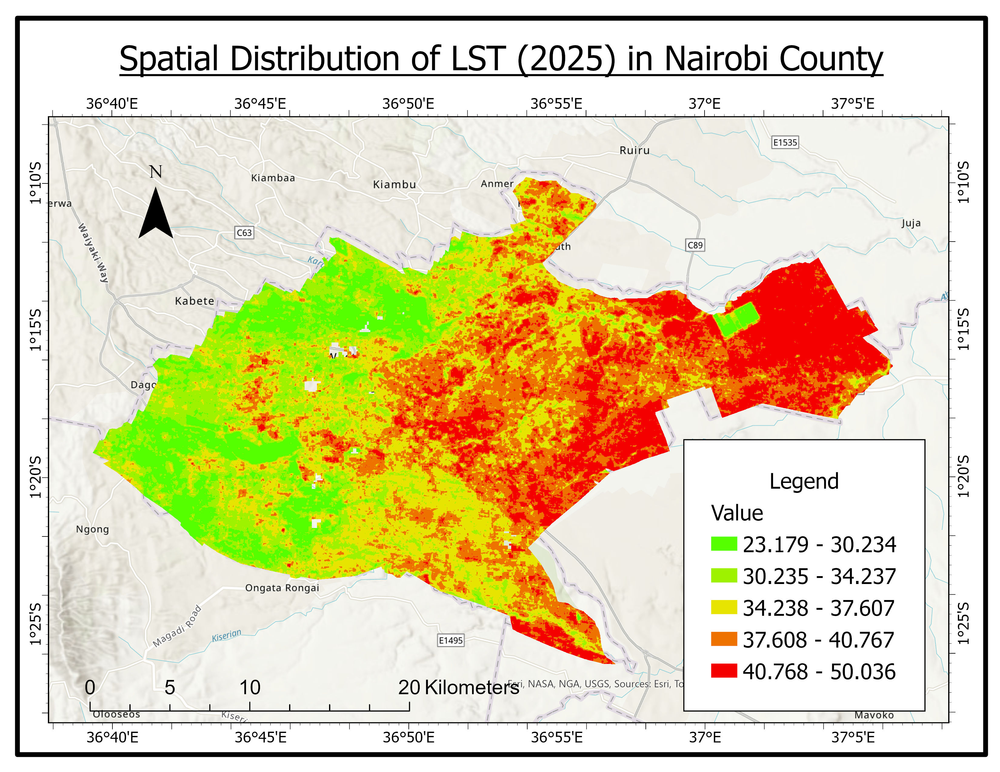
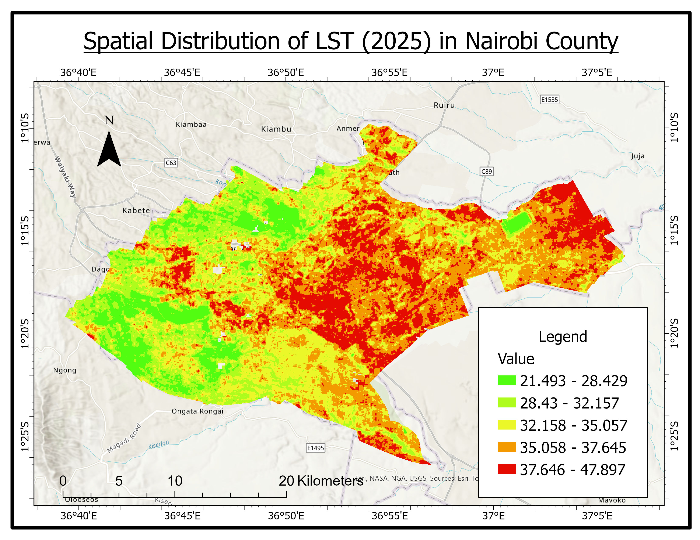

ASSESSING THE EFFECTS OF URBAN EXPANSION ON GREEN INFRASTRUCTURE IN NAIROBI COUNTY (2015-2025)
This study assesses the effects of urban expansion on green infrastructure in Nairobi County between 2015 and 2025 using GIS and remote sensing techniques.
Between 2015 and 2025, Nairobi witnessed major infrastructure projects including the Standard Gauge Railway, expansion of the Eastern and Northern Bypasses, and the Nairobi Expressway. Zoning reviews in Upper Hill, Kilimani, and Kileleshwa increased plot ratios from 100% to 200%, accelerating densification.
Key questions addressed:
- How did urban green space change between 2015 and 2025?
- What are the primary drivers of green space fragmentation?
- How does green space change affect Land Surface Temperature and the Urban Heat Island effect?
Data Sources:
Landsat 8 (2015), Sentinel-2 and Landsat 9 (2025), CHIRPS rainfall, ERA5-Land temperature, NASA SRTM 30m elevation, KNBS population data.
Objectives
General Objective
To assess the effects of urban expansion on green infrastructure in Nairobi County between 2015 and 2025 using GIS and remote sensing approaches.
Specific Objectives
- To analyze the spatiotemporal dynamics of urban green space between 2015 and 2025 in Nairobi City County.
- To determine the drivers of green space fragmentation in Nairobi due to urbanization from 2015 to 2025.
- To assess the effects of urban green space change on Land Surface Temperature (LST) and the Urban Heat Island (UHI) effect in Nairobi.
Study Area

Nairobi City County covers approximately 696 km². Population: 4.4 million (2019 census). The city uniquely borders Nairobi National Park, creating both opportunities and challenges for urban-nature coexistence.
Methodology
A multi-step GIS and remote sensing workflow integrating satellite imagery, climate data, and weighted overlay analysis.
Workflow: [Data] → [Preprocess] → [LULC] → [NDVI] → [LST Retrieval] → [Driver Analysis] → [UHI Analysis]
Satellite Data Processing
Landsat 8 (2015) and Sentinel-2/Landsat 9 (2025) imagery processed with radiometric calibration, atmospheric correction, and clipping to Nairobi boundary.
Land Use/Land Cover (LULC)
Method: Supervised classification (Random Forest)
Classes: Built-up area, Dense vegetation, Sparse vegetation, Bare land, Grassland, Water
Outputs: LULC 2015, LULC 2025, LULC Change map


Key findings: Grassland increased by 137.93 km² | Sparse vegetation decreased by 128.07 km² | Net vegetation gain: 8.14 km²
NDVI (Vegetation Health)
Formula: (NIR - Red) / (NIR + Red)
Outputs: NDVI 2015, NDVI 2025, NDVI Change map


Key finding: 80.89% of Nairobi County experienced declining vegetation health between 2015 and 2025.
Fragmentation Metrics

Mean patch size: 0.015 ha (≈ 12m × 12m — size of a small garden)
Number of patches: 4.8 million — indicating extreme fragmentation
Conclusion: Most green spaces are highly fragmented into tiny patches, reducing ecological function.
Driver Analysis

| Driver | Coefficient (β) | p-value |
|---|---|---|
| Distance to roads | -0.0025 | < 0.001 |
| Distance from CBD | -0.00008 | 0.003 |
| Population density | 0.00004 | 0.012 |
Pseudo R² = 0.28 — Model explains 28% of vegetation loss variation
Land Surface Temperature & UHI


| Measure | 2015 | 2025 | Change |
|---|---|---|---|
| Mean LST (Built-up) | 38.87°C | 36.56°C | -2.31°C |
| Mean LST (Vegetation) | 35.29°C | 31.74°C | -3.55°C |
| UHI Intensity | 3.58°C | 4.82°C | +1.24°C |
NDVI-LST Correlation: r = -0.65 (2015), r = -0.72 (2025) — confirming vegetation's cooling effect.
Results
Vegetation Paradox
Nairobi gained vegetation area (+8.14 km²) but lost vegetation quality, with 80.89% of the county experiencing NDVI decline. New grassland in peri-urban areas masked degradation of established forests.
Key Drivers
Roads were the strongest driver of vegetation loss. Development concentrated along the Eastern Bypass, Southern Bypass, Northern Bypass, Outering Road, and Kangundo Road, where large tracts of land were converted to gated communities, shopping centers, and warehousing.
Urban Heat Island
UHI intensity increased from 3.58°C to 4.82°C, a widening of 1.24°C. Vegetated areas cooled more than built-up areas, increasing the temperature gap.
Recommendations
- Enforce green space regulations: Require minimum 15% vegetation cover in all new developments, especially in Upper Hill, Kilimani, and Kileleshwa.
- Implement greening programs along roads: Plant trees along Eastern Bypass, Southern Bypass, Northern Bypass, Outering Road, and Kangundo Road.
- Protect the Athi River riparian corridor: Declare as a protected zone with a minimum 30m buffer from the river.
- Establish remote sensing monitoring: Deploy a 6-month satellite monitoring system using Sentinel-2 to detect new bare land expansion early.
Conclusion
This study assessed urban expansion effects on green infrastructure in Nairobi County (2015-2025) using remote sensing, GIS, and driver analysis. While Nairobi gained vegetation area (+8.14 km²), 80.89% of the county experienced NDVI decline. Roads and densification policies were the primary drivers of vegetation loss. UHI intensity increased from 3.58°C to 4.82°C as cooling vegetation diminished. This hotspot map provides a spatial decision-support system for targeted interventions.